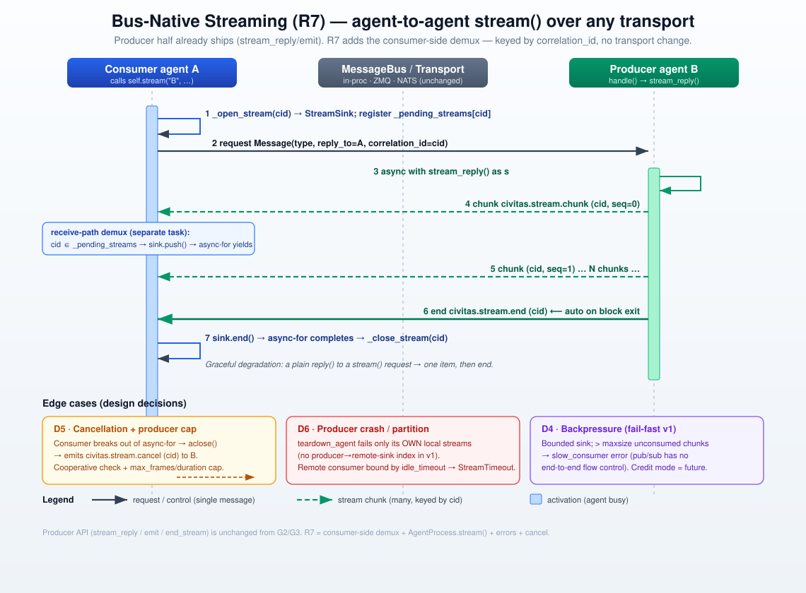

Bus-Native Streaming (v0.7.x · R7)¶
Status: ✅ Approved v2 — Oracle-reviewed; maintainer signed off 2026-07-05 ("go with recommendations": A·a + B·field + C·cap). Plan → Momus → implementation next.
Source: GH #15; gateway-streaming.md §D1 (Option B); milestones.md v0.7.0 R7 (stretch → slipped to a follow-up)
Builds on: G2/G3 gateway streaming (shipped), R1 (bus.teardown_agent, non-blocking lifecycle)
v2 changelog (Oracle review): The strategy survives — D1 (no transport change) is sound on all three transports; using
self.nameasreply_toavoids the ephemeral-reply-lifetime trap ofrequest(). But the integration was wrong: D2's in-_rundemux self-deadlocks the documented consume-in-handle()pattern (the single loop task parks inhandle(), so the demux that feeds the sink can never run). Rewritten around receive-path demux (D2), which also removes head-of-line blocking. Further fixes: D6 downgraded (teardown_agentcan't reach a remote consumer's sink →idle_timeoutis the real peer-loss bound);seqload-bearing, now required via aMessage.seqfield (transport drops + JetStream redelivery); producer-side cap (cancel is best-effort); sender verification on demux (cids aren't secret);_pending_streamscleanup;civitas.stream.*enforced as reserved.

1. Problem¶
Streaming is gateway-mediated only. An external client can receive incremental output (SSE / WebSocket / gRPC server-streaming, G2/G3), but one agent cannot stream to another agent over the bus. ask() is single-shot: the caller blocks until one reply. There is no AsyncIterator reply path between agents.
Concrete cost: the LangGraph / OpenAI adapters (civitas-contrib) already have token streams from their frameworks but must buffer to a single reply because the bus cannot carry chunks agent-to-agent (adapters.md L112, L222). Any orchestrator→worker pipeline that wants live partial output is blocked.
2. Current behavior (ground truth)¶
The producer half already exists and is proven — the gateway relies on it across every transport.
- Producer API (public, shipped) —
process.py: emit(payload)(887-896),end_stream()(898-902),stream_reply()async-CM (904-926),StreamReply.send()(155-169)._emit_stream(message, payload, stream_type)(928-945): builds aMessage(type=civitas.stream.{chunk,end,error}, recipient=message.reply_to or message.sender, correlation_id=message.correlation_id)andself._bus.route(out). Chunks are ordinary bus messages routed by name + correlation_id.- Constants (
24-26):_STREAM_CHUNK/_END/_ERROR = "civitas.stream.{chunk,end,error}". - Consumer half (gateway-private) — the missing piece for agents:
StreamSink(gateway/dispatch.py:72-140): bounded buffer;push()fails withslow_consumeronce_pending >= maxsize(comment: "a fire-and-forget bus gives us no way to push backpressure onto the producing agent");drain(idle_timeout, max_duration)→AsyncIterator, raises_StreamClosedon error/timeout.HTTPGateway._open_stream/_close_stream(gateway/core.py:285-291),_send_stream_request(293-316, setsreply_to=self.name), andhandle()(318-333) which demuxes chunk/end/error bycorrelation_idinto the matching sink.GatewayDispatcher.stream()(gateway/dispatch.py:235-266).- Receive path vs loop —
bus.setup_agent()(bus.py:51-63) subscribes the agent's message callback, which runs in the transport-receiver task (ZMQ_receiver_loop, NATS callback) or the producer's task (in-proc directawait handler); it enqueues ontoMailbox. Separately,process.py._run(~1129-1170) pulls the mailbox in a single sequential loop task, early-continues for_agency.*/civitas.dynamic.terminated, thenself._current_message = message; await self._dispatch(message)→handle()(1229). These are different tasks — the crux of D2. - Transport —
transport/__init__.py:request()is single-shot (send + await one reply, then the ephemeral_reply.{uuid}address is torn down).publish()is fire-and-forget;subscribe(address, handler)is the receive path. No transport supports multi-frame replies — but the gateway proves multi-chunk delivery to a named, persistent recipient already works everywhere.
Four gateway assumptions that do NOT generalize (Oracle): it (1) drains in a separate uvicorn task from its demux, (2) carries no business traffic, (3) is never SUSPENDED, (4) is not restarted mid-stream. A general agent violates all four — so R7 cannot just copy the gateway's in-handle() demux; it must intercept on the receive path (D2) and add cancel/peer-loss/ordering semantics (D5–D7).
3. Design approach — generalize the consumer half; demux on the receive path¶
AgentProcess.stream(recipient, payload, …) registers a StreamSink under a fresh correlation_id in a per-agent _pending_streams map, sends an ordinary request with reply_to=self.name, and yields chunks as they arrive. Incoming civitas.stream.* frames are intercepted in the receive path — the message callback wired by bus.setup_agent — before they reach the mailbox or handle(). Because that callback runs in a different task than the consumer's handle(), a handle() doing async for chunk in self.stream(...) is fed concurrently (no deadlock), and chunks never contend with business traffic in the mailbox (no head-of-line blocking). The producer side is unchanged.
This retires Option B (§D1): the "ZMQ/NATS multi-reply semantics are hard" concern assumed changing Transport.request(). We reuse publish() + a named reply address — the path the gateway already runs on ZMQ/NATS.
What's missing to make it work end-to-end:
1. A receive-path demux (today it lives only in the gateway's handle(), in the wrong task).
2. A shared, non-gateway home for StreamSink + stream errors.
3. Cancellation, peer-loss, ordering, sender-verification semantics an edge gateway never needed.
4. Decisions¶
| # | Decision | Rationale |
|---|---|---|
| D1 ★ | No transport change — publish() + reply_to=self.name + correlation_id demux (Option A generalized), not Transport.stream() (Option B). Oracle-confirmed sound on in-proc/ZMQ/NATS. |
self.name is the consumer's permanent subscription → sidesteps request()'s ephemeral-reply teardown; keeps the 5-method transport contract. |
| D2 ★⚠️ | Demux on the RECEIVE PATH, not in _run. Intercept civitas.stream.* (and a pending-cid reply) in the bus.setup_agent message callback (runs in the transport-receiver / producer task), route to the _pending_streams[cid] sink, and do not enqueue to the mailbox. |
Fixes the self-deadlock: _run is a single task that parks in handle(); a demux there can't feed a sink handle() is awaiting. Receive-path demux runs in a different task; also bypasses the mailbox → no head-of-line blocking. |
| D3 | API: async def stream(self, recipient, payload, message_type="message", *, timeout, idle_timeout, max_duration, maxsize) -> AsyncIterator[dict[str, Any]]. Producer API unchanged. Gap detection internal (raises typed error). |
One new public method; yields payload dict (ergonomic, matches gateway drain()). |
| D4 | Backpressure = fail-fast bounded sink; overflow → SlowConsumerError. In-proc could block for free (bounded mailbox) but we choose one uniform rule over per-transport asymmetry. |
Fire-and-forget pub/sub has no end-to-end flow control; drop-oldest would corrupt token streams, so fail-fast is the correct minimum, not a compromise. |
| D5 ⚠️ | Cancellation = cooperative + producer cap (C). Consumer abandoning the iterator emits civitas.stream.cancel (cid); stream_reply()/emit() check a cancelled flag and stop. Additionally the producer stream carries a max_frames/max_duration cap so a lost cancel or dead consumer can't run it forever. |
Cancel is best-effort over pub/sub and only bounds the consumer; the cap bounds the producer. Composes with R5 quotas. |
| D6 ⚠️ | Peer-loss bound = idle_timeout/max_duration (A·a). teardown_agent operates only on the torn-down agent's own mailbox — it has no producer→consumer-sink index, so it can't synchronously fail a remote consumer's sink. v1 relies on the consumer's idle/max-duration bounds; on on_stop/teardown an agent fails its own local pending streams. (Immediate StreamInterrupted via a bidirectional index deferred — §8-A.) |
Honest about the mechanism; no false "immediate interrupt" promise; still bounded (no hang). |
| D7 ⚠️ | seq is REQUIRED (B): producer stamps a monotonic per-stream seq on an envelope field Message.seq: int \| None; consumer detects gaps (drop), duplicates & reorder (JetStream at-least-once) and fails the stream with a typed StreamError on violation (v1). |
Not "insurance": ZMQ drops at HWM, NATS drops on slow consumers, JetStream redelivers. Envelope field (not __seq__ payload key) avoids mutating the yielded dict; from_dict already filters unknown keys → back-compat both ways. |
| D8 | Graceful degradation: intercept by correlation_id — a producer answering with a plain reply() yields one item, then end. |
A streaming caller against a non-streaming handler must not hang. |
| D9 | Shared home + public errors: move StreamSink/_StreamClosed to civitas/streaming.py; export StreamError → SlowConsumerError, StreamInterrupted, StreamTimeout from civitas.errors. Gateway imports the shared sink (behavior-preserving, guarded by G2/G3 suites). |
One sink shared by agents + gateway; typed errors for consumers. |
| D10 | Leave G2/G3 behavior unchanged (#15 non-goal). | De-risks R7. |
| D11 ⚠️ | Sender verification: the agent demux accepts a chunk only if message.sender == the stream request's recipient (the expected producer); mismatches are dropped. |
cids are _uuid7 (timestamp+random, not secret); without this any agent knowing a cid + the consumer name can inject chunks. (Gateway edge stays as-is.) |
| D12 | _pending_streams cleanup guaranteed in a finally in stream() (normal end, exception, break/aclose, and on_error RETRY that re-runs handle() with a new cid). |
Retry/restart otherwise strands the old sink while the producer keeps emitting. |
| D13 | Enforce reserved types: validate civitas.stream.* at the send boundary like _agency.* (bus.py:104-110), so application code can't spoof stream frames. |
Previously claimed reserved but only _agency.* was enforced. |
★ pivotal · ⚠️ needs careful review
5. Backpressure — prior art & position¶
Fire-and-forget pub/sub cannot provide end-to-end backpressure without a side-channel:
- core NATS: no flow control; server marks slow consumers and disconnects, clients drop on local buffer overflow.
- ZeroMQ: PUB/SUB drops at the high-water mark; only PUSH/PULL blocks at HWM (blunt, can't tell "slow consumer" from "slow link").
- gRPC/HTTP-2 has window-based flow control but the window is small and greedy — the community consensus is that application-level demand signaling is still required.
- Credit/demand-based is the "correct" streaming answer — GenStage/Flow (min_demand/max_demand), Reactive Streams request(n), Akka Streams windowed demand, NATS JetStream pull consumers (MaxAckPending). All add a backward demand channel and per-message round-trips.
Position: v1 = fail-fast bounded buffering (D4) — honest, matches shipped gateway, zero new round-trips. Two Oracle caveats folded in: (1) in-process already has free blocking backpressure via the bounded mailbox — we knowingly trade that for one uniform rule; (2) the transport can drop chunks before the sink (ZMQ HWM, NATS), so maxsize is not the only loss point → this is why seq (D7) is mandatory. Credit-based demand (civitas.stream.credit(n), GenStage-style windowing) is a reserved-namespace future (Q5).
6. Threat / abuse model¶
- Cross-stream injection → D11 sender check: cids are
_uuid7(timestamp+random, not secret), so matchsender == expected producer, not cid alone. M4 signing proves identity; the sender check adds authorization. - Runaway producer → bounded by
maxsize,idle_timeout,max_duration, cooperative cancel and the D5 producer cap; composes with R5 quotas. - Reserved types → D13 enforces
civitas.stream.*at the send boundary (previously only_agency.*was validated). - Signing: stream frames are ordinary messages → transport-level Ed25519 signing (M4) applies unchanged.
7. API sketch¶
# Consumer (NEW) — safe to consume directly inside handle() (receive-path demux, D2)
async def handle(self, message: Message) -> Message | None:
async for chunk in self.stream("summarizer", {"doc": message.payload["doc"]}):
await self.emit(chunk) # re-stream onward, or accumulate
return self.reply({"ok": True})
# Producer (UNCHANGED — already shipped)
async def handle(self, message: Message) -> None:
async with self.stream_reply() as s: # producer cap enforced under the hood (D5)
async for token in self.llm_stream(...):
await s.send({"delta": token})
8. Resolved decisions (maintainer sign-off — 2026-07-05: "go with recommendations")¶
Oracle agreed with the v1 leans on Q2 (defer producer opt-in; D8 only), Q4 (AsyncIterator[dict]), Q5 (defer credit; reserve civitas.stream.credit), Q6 (share StreamSink now, guard with G2/G3 suites).
- ✅ A — D6 scope = (a):
idle_timeout/max_durationis the peer-loss bound for v1; immediateStreamInterruptedvia a bidirectional producer→sink index is deferred. [v0.10.1: now built — see addendum below.] - ✅ B —
seqplacement =Message.seq: int | Noneenvelope field (not a__seq__payload key), so the yielded dict is never mutated;from_dictalready filters unknown keys → back-compat both directions. - ✅ C — producer cap added: a producer-side
max_frames/max_durationbound so a lost cancel or dead consumer can't run the producer forever.
8b. Addendum (v0.10.1) — immediate StreamInterrupted on producer loss (D6 upgraded)¶
The D6·a deferral is lifted. The producer already keeps a per-outbound-stream registry
(_out_streams: dict[cid, _OutStream]); _OutStream now also carries the recipient (captured
when the stream's first chunk is emitted). On the producer's message-loop teardown — which covers a
graceful stop, a force-restart, and a crash alike (all exit the loop, and the bus is still wired at
that point) — _interrupt_out_streams() sends a civitas.stream.error frame carrying
{"error": "producer_stopped"} to each active stream's recipient, then clears the registry.
_stream_error("producer_stopped") maps to StreamInterrupted, so a consumer mid-stream fails
immediately instead of waiting out its idle_timeout.
This is the producer→consumer half; _fail_local_streams (unchanged) remains the consumer's own
local-stop half. idle_timeout/max_duration stay as the backstop for a genuinely-unreachable
peer (a killed process that never runs teardown, or a dropped transport) — the immediate interrupt
is best-effort per consumer and never blocks teardown. Same-process and any transport where the
producer runs teardown; a hard kill -9 still falls back to the timeout, as it must.
9. Test plan (outline)¶
- Deadlock regression (the BLOCKER): consume a stream inside
handle()→ completes, does not raiseStreamTimeout. - Head-of-line: a high-volume stream interleaved with normal
ask()traffic to the same agent → business traffic is not starved (receive-path demux bypasses the mailbox). - All 3 transports (parametrized): N chunks + end;
SlowConsumerErroron overflow;idle_timeout/max_duration; error terminator →StreamError; graceful degradation (plainreply()→ one item);seqgap/dupe/reorder → typed error (JetStream redelivery case explicit). - Sender verification: a chunk with a foreign
senderon a valid cid is dropped (D11). - Cancellation + cap: consumer
breaks → producer receivescivitas.stream.canceland stops; lost-cancel → producer stops at its cap (D5). - Supervision: producer crash → consumer bounded by
idle_timeout(D6·a); consumer restart/RETRY → old_pending_streamsentry cleaned up (D12), no leak. - Reserved types: app sending
civitas.stream.*is rejected (D13). - Gateway parity (D9/D10): existing G2/G3 SSE/WS/gRPC suites stay green. Full suite green; coverage ≥ 85%.
10. Implementer checklist (once A/B/C signed off)¶
civitas/streaming.py: moveStreamSink+ errors; addseqgap/dupe/reorder detection.civitas/errors.py:StreamError,SlowConsumerError,StreamInterrupted,StreamTimeout.bus.py: receive-path demux hook insetup_agent's callback (routecivitas.stream.*/pending-cid to the agent's sink registry before mailbox enqueue); enforce reservedcivitas.stream.*at the send boundary (D13).process.py:_pending_streamsmap +stream()(register-before-send;finallycleanup D12; sender check D11; emitcivitas.stream.cancelon close); producer cap instream_reply/emit(D5); fail local pending streams onon_stop.messages.py:Message.seq: int | None(+to_dict/from_dict);civitas.stream.cancel(+ reservedcivitas.stream.credit) in the stream-type set.gateway/: import sharedStreamSink(D9); no behavior change (D10).civitas/__init__.py: export new errors;CHANGELOG.md[Unreleased]; AGENTS.md reserved-type note;docs/streaming.md+ link fromtransports.md.
11. References¶
- GH #15;
gateway-streaming.md§D1 (Option A/B fork), D6 (stream_queue_maxsize). - Prior art: GenStage/Flow, Reactive Streams
request(n), Akka Streams, gRPC flow-control, NATS JetStreamMaxAckPending, ZeroMQ HWM. - Reuses: R1
bus.teardown_agent; shippedstream_reply/emitproducer path.